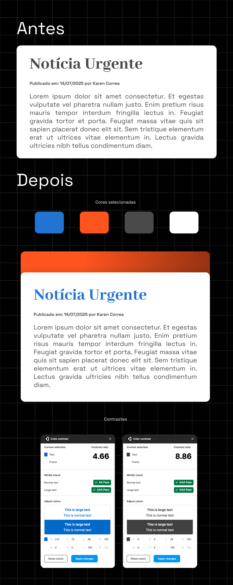

Dia 2: Paleta de Cores
As cores são a alma do design. Aprenda a usá-las para criar emoção, guiar o olhar e construir uma interface memorável.
Mais que decoração: A Psicologia das Cores
Cada cor que você escolhe "conversa" com o cérebro do seu usuário em um nível subconsciente. O azul transmite confiança e segurança (usado por bancos e redes sociais), enquanto o vermelho cria um senso de urgência (usado em promoções e alertas). Entender o básico da psicologia das cores ajuda a definir o tom certo para o seu produto e a evocar as emoções corretas.

A regra de ouro da harmonia: 60-30-10
Uma forma simples e eficaz de garantir que sua paleta de cores não vire um carnaval de informações é usar a regra 60-30-10. Ela cria equilíbrio e hierarquia visual de forma quase automática.
- 60% Cor Primária: A cor dominante, geralmente mais neutra, usada em fundos e grandes áreas.
- 30% Cor Secundária: A cor de apoio, que complementa a primária e é usada em componentes como cards e menus.
- 10% Cor de Destaque (Accent): A cor mais vibrante, reservada para os elementos que precisam de atenção máxima: botões de ação, links importantes e notificações.
Acessibilidade em foco: Você passa no teste de contraste?
De nada adianta uma paleta linda se as pessoas não conseguem ler o texto. O contraste entre a cor do texto e a cor do fundo é fundamental para a acessibilidade. A recomendação mundial (WCAG) sugere um contraste mínimo de 4.5:1 para textos normais. Use ferramentas online para verificar suas combinações:
Vídeos para colorir o conhecimento
Para aprofundar, assista ao vídeo que explica de forma prática como criar e gerenciar paletas de cores no seu dia a dia como UI Designer.
Como usar cores da forma certa no design do seu site ou aplicativo (Canal UIUXBR.DESIGN)

Seu desafio de hoje: colorindo com intenção
Começe do básico e se desejar avançe no desafio com o bônus:
O objetivo é o mesmo: praticar e evoluir!
Desafio do dia
O básico da harmonia
Sua missão é criar uma paleta de cores funcional usando a regra 60-30-10 e aplicá-la ao seu design do Dia 1.
- Use uma ferramenta online (como Coolors) para gerar uma paleta com uma cor primária, uma secundária e uma de destaque.
- Aplique as cores ao seu card de notícia.
- (Bônus) Use um "Contrast Checker" para garantir que seu texto passe no nível "AA" de acessibilidade.
Quer avançar um pouco mais?
Cores que comunicam (semântica)
Um bom design usa cores para comunicar estados do sistema. Expanda sua paleta para incluir cores com significado.
- Além da sua paleta principal, defina as cores semânticas: uma para `sucesso` (verde), uma para `erro` (vermelho) e uma para `aviso` (amarelo/laranja).
- (Bônus) Para sua cor primária (ex: azul), crie 5 variações de tonalidade (duas mais claras, duas mais escuras), criando uma base para estados de `hover` e `active`.
- Use o plugin Foundation no figma, ele gera as paletas e tokens
Exemplo de Referência

Concluiu? Mostre para o mundo!
Compartilhe seu resultado no LinkedIn. Diga qual nível você escolheu e o que aprendeu!